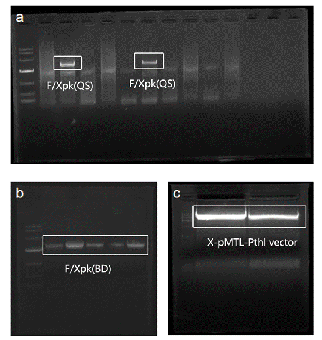
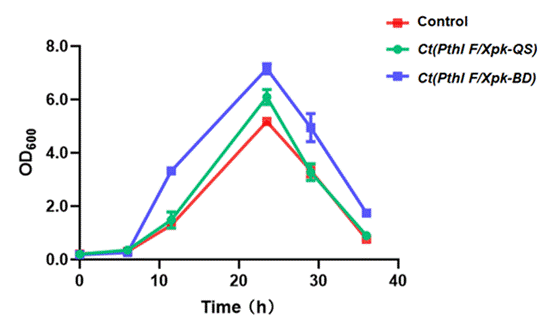
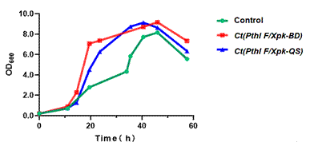
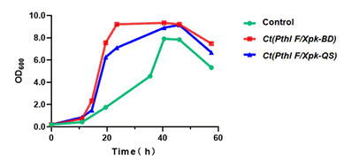
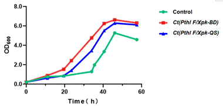
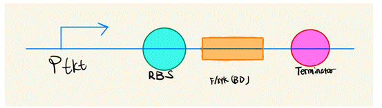
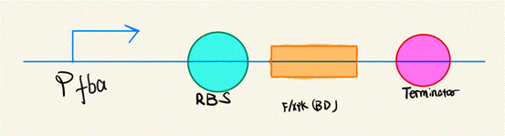
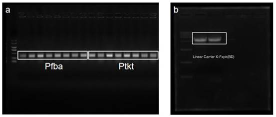
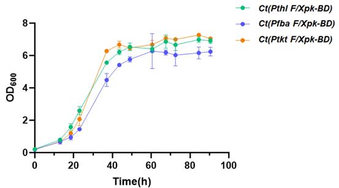
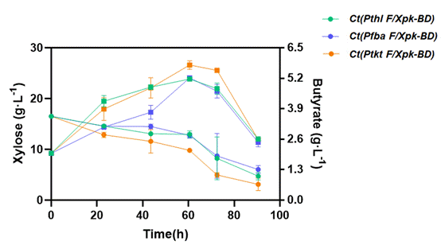

Abstract
This project is aimed to reduce the carbon emission duringthe
fermentation of a valuable industrial strain,
Clostridium tyrobutyricum (C.tyrobutyricum).
Phosphoketolase（F/Xpk）
genesequences well fitted for C.tyrobutyricum L319 were
obtained by strain screening and sequenceoptimization. Plasmids of the
gene were constructed and transferred into
C. tyrobutyricum L319 to construct anon-oxidative glycolysis
(NOG) pathway. Unlike the nativeEmbden-Meyerhof-Parnas (EMP) pathway
which emits CO2 duringglycolysis, this alternative NOG
pathway has no carbon emission whilemetabolizing glucose. We
constructed seven parts, BBa_K4886000-BBa_K4886006, toexpress
phosphoketolase and construct the NOG pathway in C.
tyrobutyricum. The constructed NOG pathway was
evaluated byexperiments such as PCR, HPLC, and fermentation
experiment.
Table Part list
|
No.
|
Name
|
Type
|
Description
|
Length
|
|
1
|
BBa_K4886000
|
Basic
|
F/Xpk(QS), optimized F/Xpk gene derived from
Bifidobacterium adolescentis ATCC 15703
|
2478
|
|
2
|
BBa_K4886001
|
Composite
|
Pthl-F/Xpk(BD), expression of F/Xpk from
Clostridium acetobutylicum ATCC824 with Pthl
promotor
|
3036
|
|
3
|
BBa_K4886002
|
Composite
|
Pthl-F/Xpk(QS), expression of optimized
F/Xpk from Bifidobacterium adolescentis ATCC
15703 with Pthl promotor
|
3123
|
|
4
|
BBa_K4886003
|
basic
|
Pfba, derived from Clostridium tyrobutyricum
|
300
|
|
5
|
BBa_K4886004
|
composite
|
Pfba-F/Xpk(BD), expressing
F/Xpk from Clostridium acetobutylicum with
fba promotor
|
2739
|
|
6
|
BBa_K4886005
|
basic
|
Ptkt, promoter derived from
Clostridium tyrobutyricum
|
300
|
|
7
|
BBa_K4886006
|
composite
|
Ptkt-F/Xpk(BD)
It is a part that is responsible for expressing F/Xpk from
Clostridium tyrobutyricum. with tkt promotor.
|
2739
|
1 ProjectOverview
Our project aims to reducecarbon emission of
Clostridiumtyrobutyricum (C. tyrobutyricum)through the
construction of a non-oxidizing glycolysis (NOG) pathway byexpressing
phosphoketolase encoded by F/Xpkgene in the bacteria. We
successfully constructed four C. tyrobutyricum strains with the
NOG pathway which had reducedcarbon loss, and found that the best
carbon source for these strains wasxylose. With PCR, SDS-PAGE,
fermentation experiment and HPLC to analyze DNA,protein, growth and
product yields, we found that the strain with the F/Xpk gene
from Clostridium acetobutylicum combined with Ptkt promoter had the best growth, highest butyric acid yield andleast
carbon loss.
To achieve these, wefulfilled four targets as follows.
Target 1:
We selected two promising F/Xpkgenes from two strains
F/Xpk(BD)(BBa_K4119076) from Bifidobacterium adolescentis (B. adolescentis), and F/Xpk(QS) ( BBa_K4886000) from
Clostridium acetobutylicum
(C. acetobutylicum).
Target 2: We constructed two C.tyrobutyricum strains with
NOG pathway by transfection with pMTL-Pthl-F/Xpk(QS) or
pMTL-Pthl-F/Xpk(BD) plasmids
Our results showed thatboth strains have better butyric acid yield
and less carbon loss compared tothe native strain. Between the two
strain, the strain with pMTL-Pthl-F/Xpk(BD) had better growth
andproduct yield. Therefore, F/Xpk(BD)gene was the optimal gene
for constructing NOG pathway.
Target 3: We found that among glucose, fructose and xylose, the
optimalcarbon source for the above C. tyrobutyricumstrains
with NOG pathway was xylose.
Target 4: We constructed two C.tyrobutyricum strains
transfected with pMTL-Pfba-F/Xpk(BD) and
pMTL-Ptkt-F/Xpk(BD)plasmids
Our results showed thatthe strain with Ptkt to drive
theexpression of F/Xpk(BD) had bettergrowth and product yields
than those with Pfbaor Pthl promoter.
2 DetailedTargets
Target 1 F/Xpk gene
screening
Transition from EMP pathway to NOG pathway in
C. tyrobutyricum requires importing F/Xpk gene from
other strains. To obtain a highly fitted F/Xpk gene for
C. tyrobutyricum, we selected two phosphoketolase-derived
strains, B. adolescentis and C. acetobutylicum.
B.adolescentis is used widely as a common source for
phosphoketolase,therefore its F/Xpk gene sequence hasa high
fitness for a wide range of strains. C.acetobutylicum is
closely related to our host strain, C. tyrobutyricum.
Considering the kinship, F/Xpk gene from
C. acetobutylicum may have a better fitness in
C. tyrobutyricum. F/Xpkgene derived from
C. acetobutylicumis notated as F/Xpk(BD).
F/Xpk sequence derived from B. adolescentis was
optimized by codonoptimization (https://www.genscript.com.cn). Theoptimized sequence is notated as F/Xpk(QS).
Target 2 Construction of NOG pathway in C. tyrobutyricum:
F/Xpk(QS) vs F/Xpk(BD);Pthl
Step 1:Plasmid Construction
By using a recombinant plasmid Pthl-adhE2 as a template, and
X-pMTL-Fand X-pMTL-R as primers, we obtained a X-pMTL-Pthl vector (5461bp). F/Xpk(QS) (2478 bp) and
F/Xpk(BD) (2391bp) gene fragments were amplified from the
genome of C. acetobutylicum and the genome of
B. adolescentis, respectively, by PCR. DNA
electrophoresisconfirmed the lengths of the PCR products.
F/Xpk(QS) and F/Xpk(BD) genefragments were ligated with
the X-pMTL-Pthlvector into a pMTL-Pthl-F/Xpk(QS)
recombinant plasmid anda pMTL-Pthl-F/Xpk(BD) recombinantplasmid, respectively, by Gibson assembly.
Each plasmid was transformed into E. coli JM109. After
verification by colonyPCR and DNA electrophoresis (745 bp), positive
colonies were transferred andexpanded. Gene sequencing was used to
verify that the plasmids extracted fromthe colonies were pMTL-Pthl-F/Xpk(QS) and pMTL-Pthl-F/Xpk(BD).
Figure 1 Genetic circuits of pMTL-Pthl-F/Xpk(QS) and pMTL-Pthl-F/Xpk(BD)

Note: a) F/Xpk(QS), b) F/Xpk(BD),c) X-pMTL-Pthl
vector
Figure 2 Verification of F/Xpk(QS) (2478 bp) and
F/Xpk(BD)(2391 bp) gene fragments and X-pMTL-Pthlvector
(5461bp) by gel electrophoresis
Step 2: Transfection and function analysis
By using E. coli CA434 as adonor strain, pMTL-Pthl-F/Xpk(QS) plasmid and pMTL-Pthl-F/Xpk(BD) plasmid were transferred to C. tyrobutyricum, notated as Ct(PthlF/Xpk-QS) and Ct(Pthl F/Xpk-BD),respectively.
Ct(Pthl F/Xpk-QS), Ct(Pthl F/Xpk-BD) and native C. tyrobutyricum (the
control) werefermented using glucose as carbon source. Fermentation
experiment showed thatthe growth of Ct(Pthl F/Xpk-BD) wasbetter
than that of Ct(Pthl F/Xpk-QS),Figure 3.
HPLC experiment showed that afterfermentation for 26h, the yields of
butyric acid were 3.35 g/L and 3.31 g/L in
Ct(Pthl F/Xpk-BD) and Ct(Pthl F/Xpk-QS), both higher
than theyield in the control. The yields of acetic acid were 1.36 g/L
and 1.28 g/L in Ct(Pthl F/Xpk-BD) and Ct(Pthl F/Xpk-QS),
both lower than thatin the control. Glucose consumption was much
higher in Ct(Pthl F/Xpk-BD) and
Ct(PthlF/Xpk-QS) compared with the control (Table 1).
Ct(Pthl F/Xpk-BD) showed higher glucose consumption and
butyricacid yield than Ct(Pthl F/Xpk-QS).
Butyric acid is a 4-carbonmolecule, while acetic acid is a 2-carbon
molecule. The increase in the butyricacid production and glucose
consumption and decrease in the by-product aceticacid yield suggested
that Ct(Pthl F/Xpk-BD) and Ct(Pthl F/Xpk-QS)both had
higher efficiency of using glucose and less carbon loss in
glycosiscompared with the native strain. In addition,
Ct(Pthl F/Xpk-BD) was better in reducing
carbon loss than Ct(PthlF/Xpk-QS). Based on these results, we
selected F/Xpk(BD) gene for our final engineered strain.

Figure3 Growth comparison of Ct(Pthl F/Xpk-BD)and
Ct(Pthl F/Xpk-QS)
Table 1 Metabolitelevel in Ct(Pthl F/Xpk-BD) and
Ct(Pthl F/Xpk-QS) after 26h fermentation
|
Strains
|
Glucose（g/L）
|
Acetic acid（g/L）
|
Butyric acid（g/L）
|
|
Control
|
0.82±0.82
|
1.43±0.21
|
3.06±0.24
|
|
Ct(Pthl F/Xpk-BD)
|
0
|
1.36±0.26
|
3.35±0.22
|
|
Ct(Pthl F/Xpk-QS)
|
0.09±0.09
|
1.28±0.24
|
3.31±0.24
|
Target 3 Carbon source selection for engineered
C. tyrobutyricum
To find the best carbon source togrow the engineered
C. tyrobutyricum,we compared the growth of
Ct(PthlF/Xpk-BD) and Ct(Pthl F/Xpk-QS)on different
carbon sources, including glucose, fructose and xylose.Fermentation
experiment found that both strains had better growth than thenative
strain (control) on all the carbon sources, and fructose was the
bestcarbon source for the growth of Ct(PthlF/Xpk-BD) and
Ct(Pthl F/Xpk-QS),Figure 4.
HPLC was used to compare theproduct yields and carbon source
consumption of the strains cultured ondifferent carbon sources for 45h
(Table 2). The yields of acetic acid in Ct(Pthl F/Xpk-BD) and
Ct(Pthl F/Xpk-QS) were both higher thanthe control when
cultured on fructose, indicating a low flow in NOG pathway. InCt(Pthl F/Xpk-BD)
and Ct(Pthl F/Xpk-QS) cultured on xylose,the yields of acetic
acid were both lower than the control, and the xyloseconsumption was
higher than the control. Considering both the product yields ofbutyric
acid and acetic acid and the consumption of carbon source, xylose
wasthe best carbon source for NOG pathway in the engineered
strains.

A

B

C
Note: a)Glucose,b) Fructose, c) Xylose
Figure 4 Growth of Ct(Pthl F/Xpk-BD) and
Ct(Pthl F/Xpk-QS) cultured on glucose,fructose and xylose
Table 2 Metabolite level inCt(Pthl F/Xpk-BD) and
Ct(Pthl F/Xpk-QS) cultured on differentcarbon sources for 45h
|
Carbon sources and Products
|
Native strain
|
Ct(Pthl F/Xpk-BD)
|
Ct(Pthl F/Xpk-QS)
|
|
Glucose (g/L)
|
0.41±0.41
|
0
|
0.09±0.09
|
|
Acetic acid (g/L)
|
1.43±0.21
|
1.36±0.26
|
1.28±0.24
|
|
Butyric acid (g/L)
|
3.06±0.24
|
3.31±0.22
|
3.35±0.24
|
|
Fructose (g/L)
|
3.75±0.35
|
2.71±0.32
|
2.53±0. 21
|
|
Acetic acid (g/L)
|
1.57±0.20
|
1.77±0.22
|
1.87±0.20
|
|
Butyric acid (g/L)
|
3.18±0.23
|
3.31±0.20
|
3.41±0.25
|
|
Xylose (g/L)
|
12.69±1.35
|
8.31±0.43
|
7.71±0.58
|
|
Acetic acid (g/L)
|
0.62±0.01
|
0.63±0.01
|
0.63±0.01
|
|
Butyric acid (g/L)
|
2.61±0.26
|
2.97±0.22
|
2.91±0.26
|
Target 4 Construction of NOG pathway in C. tyrobutyricum:
F/Xpk(BD); Pfba or Ptkt
Step 1: Plasmid Construction
The above experiments showed that Ct(PthlF/Xpk-BD) had better
growth, higher butyric acid yield and lower carbonloss than
Ct(Pthl F/Xpk-QS). So F/Xpk(BD) is a more fitted gene
for C. tyrobutyricum. Therefore, we selectedF/Xpk(BD) gene for our final engineeredstrain.
Since promoters can affect the transcription strength of genes,
wetried two other promoters, Pfba and Ptkt, to see if
they were more suitablefor expressing F/Xpk in
C. tyrobutyricum.
By using a recombinant plasmidpMTL-Pthl-F/Xpk(BD) asa template, and X-PN-F and X-PN-R as primers, we
obtained a X-F/Xpk(BD) vector (7670 bp). Pfbafragment
(300bp) was amplified from the genome template of C. tyrobutyricum
using P-Pfba-F and P-Pfba-R as primers, by PCR.
Ptktfragment (300bp) was amplified from the genome template of C. tyrobutyricum
using P-Ptkt-F and P-Ptkt-R as primers, by PCR. DNAelectrophoresis confirmed the lengths of
the PCR products. Pfba and Ptktfragments were
ligated with X-F/Xpk(BD)vector into a pMTL-Pfba-F/Xpk(BD) andpMTL-Ptkt-F/Xpk(BD) recombinant plasmids, respectively,by Gibson assembly.
The plasmid was transformed into E. coli JM109. After
verification by colony PCR and DNAelectrophoresis (623 bp, 1396 bp),
positive colonies were transferred andexpanded. Gene sequencing was
used to verify that the plasmid extracted fromthe colonies was pMTL-Pfba-F/Xpk(BD)
and pMTL-Ptkt-F/Xpk(BD).


Figure 5Genetic circuits of pMTL-Pfba-F/Xpk(BD) and pMTL-Ptkt-F/Xpk(BD)

Note: a) Pfba and Ptkt fragments, b)
X-F/Xpk(BD)vector
Figure6 Verification of Pfba and Ptkt fragments (both
300bp) and X-F/Xpk(BD) vector (7670 bp) by
gelelectrophoresis
Step 2: Transfection and function analysis
By using E. coli CA434 as adonor strain, pMTL-Pfba-F/Xpk(BD)
and pMTL-Ptkt-F/Xpk(BD)plasmids were transferred to C. tyrobutyricum, notated as
Ct(Pfba F/Xpk-BD) and Ct(PtktF/Xpk-BD),
respectively. Ct(PfbaF/Xpk-BD), Ct(Ptkt F/Xpk-BD) and Ct(Pthl F/Xpk-BD) were
fermented using xylose as carbon source.
Fermentation experiment showedthat the growth of
Ct(Ptkt F/Xpk-BD) was better thanthat of
Ct(Pthl F/Xpk-BD), and thegrowth of
Ct(Pfba F/Xpk-BD) was worse than that of
Ct(Pthl F/Xpk-BD) (Figure 7).
HPLC experiment showed that afterculturing on xylose for 60.5h, the
yield of butyric acid was 5.89 g/L in
Ct(PtktF/Xpk-BD), higher than the 5.19 g/L yield in Ct(Pthl F/Xpk-BD) and the 5.21 g/L in Ct(Pfba F/Xpk-BD).
Ct(PtktF/Xpk-BD) showed higher xylose consumption
than Ct(Pthl F/Xpk-BD) and Ct(Pfba F/Xpk-BD) (Figure8).
The results implied that among Pthl, Ptkt and
Pfba, Ptkt was the best promoter for
F/Xpk(BD)gene to construct NOG pathway in
C.tyrobutyricum, which had satisfactory growth, butyric acid
production andcarbon conservation.

Figure 7 Growth performance of Ct(Pfba F/Xpk-BD), Ct(PtktF/Xpk-BD) and Ct(Pthl F/Xpk-BD) on xylose

Figure 8 Butyricacid yield and xylose consumption of
Ct(Pfba F/Xpk-BD), Ct(PtktF/Xpk-BD) and Ct(Pthl F/Xpk-BD)
3 Conclusion
Our project aims to reduce carbon emission of
C. tyrobutyricum through non-oxidizingglycolysis, and also
provide ideas for carbon reduction of other strains. Inthe experiment,
we selected two sources of phosphoketoolase sequences and
threepromoters to construct NOG pathway. We found that the combination
of F/Xpk gene from C. acetobutylicum and Ptkt promoterconstructed the best C. tyrobutyricumstrain with NOG
pathway. This strain had very satisfactory growth, yield ofbutyric
acid and efficiency in using carbon source. It had reduced
carbonemission compared with the native strain, helping to mitigate
the greenhouseeffect.